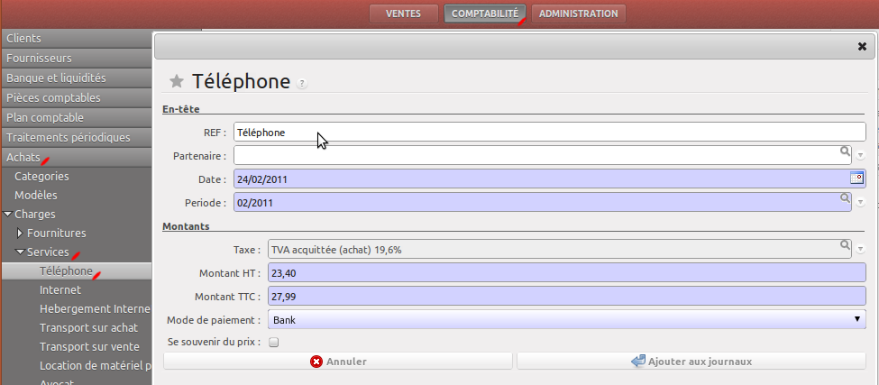
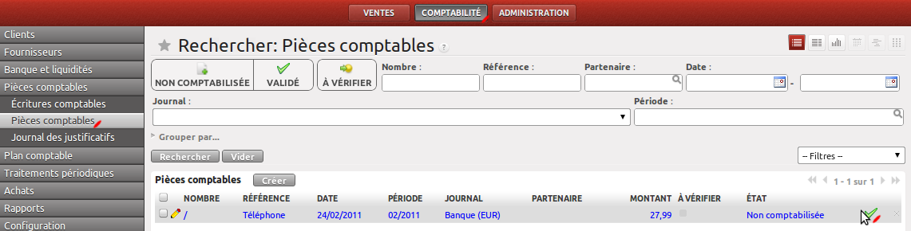
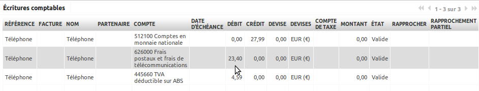

Utilisation¶
Déclarer un achat¶
Une fois que vous avez configuré vos modèles, vous pouvez les utiliser. Nous allons reprendre l’exemple utilisé lors de la configuration, à savoir une facture EDF. Si vous ne l’avez pas fait, pensez à actualiser la page pour rafraichir les menus après avoir enregistré un modèle. Cliquez ensuite sur le modèle dans le menu :
Le wizard va alors s’ouvrir, vous proposant d’entrer le prix, comme dans l’exemple ci-dessus. La periode et la date sont automatiquement choisies à partir de la date du jour.
Si vous cochez Se souvenir du prix, la prochaine fois que vous effectuerez un paiement avec ce modèle, le prix sera défini, c’est utile, par exemple, pour Internet ou EDF.
Une fois que vous avez rempli le formulaire, cliquez sur “Ajouter aux journaux”.
Valider les écritures¶
Une fois votre achat déclaré, rendez-vous dans Comptabilité->Pièces comptables, et validez celle-ci si tout est ok :
En cliquant sur l’écriture, vous verrez le détail de celle-ci :
